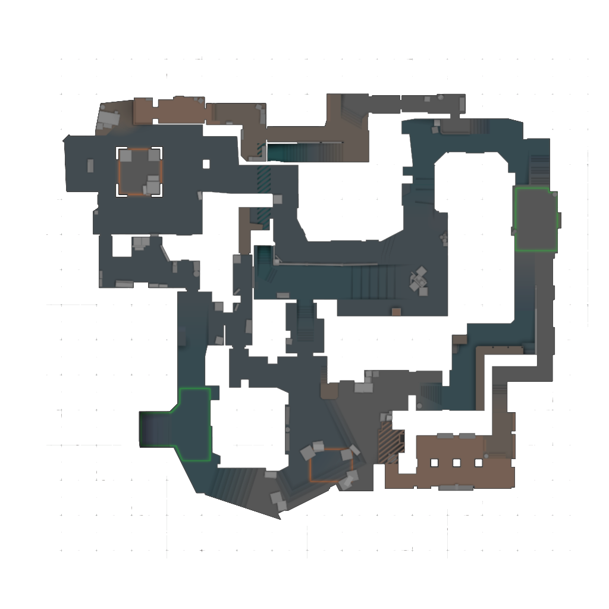

Loading world map...
100%
Unknown
No data yet
Five Color Squad — Data-Driven Esports Analysis
Counter-Strike is the world’s longest-running competitive FPS — born in 2000 as a Half-Life mod and now a global esport with $40M+ in annual prize money. Every match generates thousands of positional, economic, and combat data points. We transform that raw telemetry into interactive visualizations that reveal how the best teams in the world control territory, deploy utility, and win rounds. How pro matches work: CS2 uses MR12: up to twelve rounds per half, then teams swap between T and CT. The first team to win thirteen rounds secures the map (with overtime if tied). You win a round by eliminating the enemy, detonating the bomb, or defusing it in time. Money rolls over between rounds — loss bonus and round outcomes decide whether squads full-buy rifles and utility or run an eco. Freeze time, buy zones, and bomb timers structure every decision — the data we explore below.
Explore regional esports data across Counter-Strike.
Vitality vs The MongolZ — BLAST.tv Austin Major 2025 Grand Final
In Counter-Strike, winning a round is often about owning the right space at the right time. Before a site execute or retake ever happens, both teams are constantly fighting for control of key lanes, chokepoints, and rotation routes.
This visualization turns every frame of player movement into a live territorial map. As players advance, reposition, or die, the boundary between CT and T influence shifts in real time across the radar.
Why it matters: It helps players and coaches see when a team truly has map presence, when a push is unsupported, and how much pressure each lineup creates before the decisive duel even begins.
How does territorial control shift between the two teams as each round progresses?

■ Blue = area closer to CT (defenders)
■ Red = area closer to T (attackers)
■ Purple = contested (balanced pressure)
The map updates each frame based on which team's nearest alive player is closest to every point. As players push forward, get kills, or fall back, the colored zones shift.
Tip: Hit Space to play/pause. Use ← → arrow keys to step through frames one at a time.
A single round can look chaotic, but repeated over an entire series, movement patterns become strategy. Heatmaps reveal where players spend their time, which paths they trust, and which zones they consistently avoid.
By combining all rounds from both sides, this view exposes each team's spatial habits: defensive anchor zones, preferred attack routes, and the parts of the map where rotations naturally converge.
Why it matters: Coaches can use these hotspots to compare default structures, identify overused lanes, and prepare counter-play for the positions an opponent returns to most often.
Player positioning patterns evolve as the round progresses — watch how each team's presence shifts from spawn to endgame.

■ Blue glow = CT-side positioning ■ Red glow = T-side positioning
Brighter = more time spent. Watch how positions shift from early-round defaults to late-round aggression. Spawn areas are suppressed so the heatmap reflects real strategy, not buy-time idle positions.
Vitality grenade trajectories across BLAST.tv Austin Major 2025 — throw origins to landing zones.
At the highest level of Counter-Strike, raw aim isn't enough. Utility (grenades, smokes, flashes) is the tactical foundation that enables teams to take map control, execute site hits, or deny enemy advances.
By mapping out every piece of utility thrown by Team Vitality, we can visualize their "Utility Lanes"—the specific trajectories and lineups they rely on to execute their game plan.
Why it matters: This visualization reveals a team's tactical playbook. A coach can study these lanes to find gaps in their own utility usage or to prepare anti-strats by anticipating exactly where and when the opponent will deploy their grenades.
Vitality gun kills across BLAST.tv Austin Major 2025 — attacker positions to victim death locations.
Every kill in Counter-Strike tells a story of positioning, timing, and crossfire. By connecting the exact location of the attacker to where their victim fell, we create a "Vector Field" of lethality.
This visualization plots those fatal shots as glowing tracer lines, categorized by weapon type. Dense webs of lines highlight the most dangerous angles on the map and the preferred engagement distances of different players.
Why it matters: Understanding these vectors helps players identify where they are most vulnerable to being peaked, and allows coaches to optimize their team's crossfire setups and post-plant positioning based on empirical match data.
Counter-Strike economy is easiest to understand round by round: what each side could afford, what kind of buy that produced, and how the next rounds changed because of it.
This board works like a round control desk instead of a stock chart. It lets viewers inspect one round at a time, compare the two teams' buys directly, and read the follow-up impact in plain language.
Why it matters: It helps even non-CS viewers tell the difference between a fully armed round, a desperate force, and a saving eco that is really about the next fight.
Round-by-round buy context, follow-up impact, and player loadout inspection from the BLAST.tv Austin Major 2025 grand final.